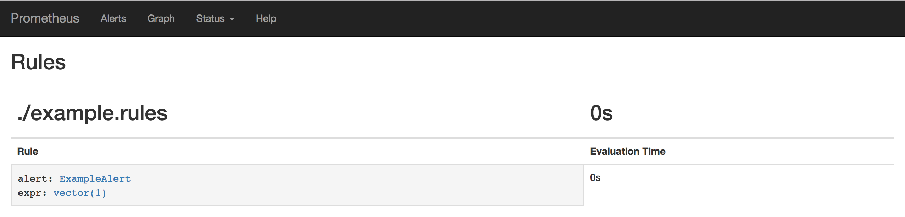

Use operator manage monitor
使用Operator管理告警
使用PrometheusRule定义告警规则
对于Prometheus而言，在原生的管理方式上，我们需要手动创建Prometheus的告警文件，并且通过在Prometheus配置中声明式的加载。而在Prometheus Operator模式中，告警规则也编程一个通过Kubernetes API 声明式创建的一个资源，如下所示：
apiVersion: monitoring.coreos.com/v1
kind: PrometheusRule
metadata:
labels:
prometheus: example
role: alert-rules
name: prometheus-example-rules
spec:
groups:
- name: ./example.rules
rules:
- alert: ExampleAlert
expr: vector(1)
将以上内容保存为example-rule.yaml文件，并且通过kubectl命令创建相应的资源：
$ kubectl -n monitoring create -f example-rule.yaml
prometheusrule "prometheus-example-rules" created
告警规则创建成功后，通过在Prometheus中使用ruleSelector通过选择需要关联的PrometheusRule即可：
apiVersion: monitoring.coreos.com/v1
kind: Prometheus
metadata:
name: inst
namespace: monitoring
spec:
serviceAccountName: prometheus
serviceMonitorSelector:
matchLabels:
team: frontend
ruleSelector:
matchLabels:
role: alert-rules
prometheus: example
resources:
requests:
memory: 400Mi
Prometheus重新加载配置后，从UI中我们可以查看到通过PrometheusRule自动创建的告警规则配置：

如果查看Alerts页面，我们会看到告警已经处于触发状态。
使用Operator管理Alertmanager实例
到目前为止，我们已经通过Prometheus Operator的自定义资源类型管理了Prometheus的实例，监控配置以及告警规则等资源。通过Prometheus Operator将原本手动管理的工作全部变成声明式的管理模式，大大简化了Kubernetes下的Prometheus运维管理的复杂度。 接下来，我们将继续使用Prometheus Operator定义和管理Alertmanager相关的内容。
为了通过Prometheus Operator管理Alertmanager实例，用户可以通过自定义资源Alertmanager进行定义，如下所示，通过replicas可以控制Alertmanager的实例数：
apiVersion: monitoring.coreos.com/v1
kind: Alertmanager
metadata:
name: inst
namespace: monitoring
spec:
replicas: 3
当replicas大于1时，Prometheus Operator会自动通过集群的方式创建Alertmanager。将以上内容保存为文件alertmanager-inst.yaml，并通过以下命令创建：
$ kubectl -n monitoring create -f alertmanager-inst.yaml
alertmanager.monitoring.coreos.com/inst created
查看Pod的情况如下所示，我们会发现Alertmanager的Pod实例一直处于ContainerCreating的状态中:
$ kubectl -n monitoring get pods
NAME READY STATUS RESTARTS AGE
alertmanager-inst-0 0/2 ContainerCreating 0 32s
通过kubectl describe命令查看该Alertmanager的Pod实例状态，可以看到类似于以下内容的告警信息：
MountVolume.SetUp failed for volume "config-volume" : secrets "alertmanager-inst" not found
这是由于Prometheus Operator通过Statefulset的方式创建的Alertmanager实例，在默认情况下，会通过alertmanager-{ALERTMANAGER_NAME}的命名规则去查找Secret配置并以文件挂载的方式，将Secret的内容作为配置文件挂载到Alertmanager实例当中。因此，这里还需要为Alertmanager创建相应的配置内容，如下所示，是Alertmanager的配置文件：
global:
resolve_timeout: 5m
route:
group_by: ['job']
group_wait: 30s
group_interval: 5m
repeat_interval: 12h
receiver: 'webhook'
receivers:
- name: 'webhook'
webhook_configs:
- url: 'http://alertmanagerwh:30500/'
将以上内容保存为文件alertmanager.yaml，并且通过以下命令创建名为alrtmanager-inst的Secret资源：
$ kubectl -n monitoring create secret generic alertmanager-inst --from-file=alertmanager.yaml
secret/alertmanager-inst created
在Secret创建成功后，查看当前Alertmanager Pod实例状态。如下所示：
$ kubectl -n monitoring get pods
NAME READY STATUS RESTARTS AGE
alertmanager-inst-0 2/2 Running 0 5m
alertmanager-inst-1 2/2 Running 0 52s
alertmanager-inst-2 2/2 Running 0 37s
使用port-forward将Alertmanager映射到本地：
$ kubectl -n monitoring port-forward statefulsets/alertmanager-inst 9093:9093
访问http://localhost:9093/#/status，并查看当前集群状态：

接下来，我们只需要修改我们的Prometheus资源定义，通过alerting指定使用的Alertmanager资源即可：
apiVersion: monitoring.coreos.com/v1
kind: Prometheus
metadata:
name: inst
namespace: monitoring
spec:
serviceAccountName: prometheus
serviceMonitorSelector:
matchLabels:
team: frontend
ruleSelector:
matchLabels:
role: alert-rules
prometheus: example
alerting:
alertmanagers:
- name: alertmanager-example
namespace: monitoring
port: web
resources:
requests:
memory: 400Mi
等待Prometheus重新加载后，我们可以看到Prometheus Operator在配置文件中添加了以下配置：
alertmanagers:
- kubernetes_sd_configs:
- role: endpoints
namespaces:
names:
- monitoring
scheme: http
path_prefix: /
timeout: 10s
relabel_configs:
- source_labels: [__meta_kubernetes_service_name]
separator: ;
regex: alertmanager-example
replacement: $1
action: keep
- source_labels: [__meta_kubernetes_endpoint_port_name]
separator: ;
regex: web
replacement: $1
action: keep
通过服务发现规则将Prometheus与Alertmanager进行了自动关联。